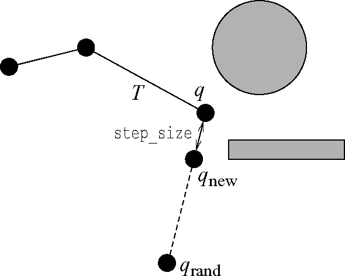
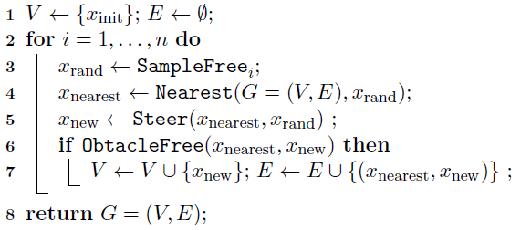

路径规划之 Rapidly-Exploring Random Trees (快速扩展随机树)
RRTs 作为一种 single-query 的规划算法被引入，它有效地覆盖了 q~init~ 和 q~goal~ 之间的空间。该规划器最初也是为 kinodynamic 运动规划而开发的，就像在 ESTs 中一样，只构建一棵树。RRTs 的适用范围超出了 kinodynamic 规划问题。RRT 算法已被证明是概率完备的。
算法描述
$T$表示一颗树。 $T_{init}$ 和 $T_{goal}$ 根节分别为 $q_{init}$ 和 $q_{goal}$ 的树。每棵树$T$都是增量扩展的。在每次迭代中，在 $Q_{free}$ 中随机均匀采样一点 $q_{rand}$ 。在$T$中找到距离 $q_{rand}$ 最近的节点 $q_{near}$ ，并尝试从 $q_{near}$ 向 $q_{rand}$ 方向移动一段距离 $step_size$ ，生成一个新节点 $q_{new}$ 。若该节点是无碰撞的(collision-free)，则添加节点 $q_{new}$ 到 $T$ 的顶点集合(vertices)中，添加 $(q_{near}, q_{new})$ 到 $T$ 的边集合(edges)中。下图展示了 RRT 在二维欧式空间扩展一个点的过程。

伪码

流程
- 初始化随机树，树结点和边只包含起点 $q_{start}$（根节点）。边和书中有一点区别，因为这里的节点用了一个链表结构，这里每个扩展节点 ($q_{new}$) 包含有一个后向指针，指向源节点 ($q_{near}$)，所以不需要单独定义边。只要构造出树，最后反向遍历即可完成路径的构造。
- 起始点 start 加入到树节点和边中
- 开始迭代
GenerateRandomNode(): 在状态空间（机械臂的关节空间或者笛卡尔空间；小车可达的二维地图空间）中随机采样一个点 $q_{rand}$ 。为加快 RRT 到达目标点 $q_{goal}$ 的速度，在随机采样过程中，加随机的概率 p 来决定，此次扩展的目标点 $q_{goal}$ 是随机点还是目标点 $q_{goal}$ 。当 $0\ltp prob$ 时，取随机采样点；否则取目标点 $q_{goal}$ 。这个概率不宜过大，否则容易陷入障碍物包围圈中不容易跳出。FindNearestNode(qrand): 遍历 RRT 树节点，返回距离 $q_{rand}$ 最近的一个节点 $q_{near}$ExtendTree(qnear, qrand): 沿着 $(q_{near}, q_{rand})$ 方向，以一定的步长 $step_size$ 扩展一个新节点 $q_{new}$, 如果扩展不成功（超出地图范围），返回 None，放弃这次扩展。CollsionFree(qnear, qnew): 对 $(q_{near}, q_{new})$ 路径进行碰撞检查，包括路径过程中及起始点是否有障碍物。这里采用等间距采样，检查路径中位置点所处网格是否包络障碍物。如果发生碰撞，则放弃扩展。- 如果新节点 $q_{new}$ 被接受（新节点不为
None且与 $(q_{near}, q_{new})$ 之间的路径无碰撞），则将该点加入到树中，并将该节点的后向指针 $q_{new}.parent$ 指向 $q_{near}$ 。这样，在找到目标点时，根据该指针，可遍历得到完整的路径。为了防止树节点过多，可以再检查$q_{new}$是否与树中某个节点过于接近（一般取小于扩展步长），如果是，则也可以放弃此次扩展。但是这也会导致算法时间增长，毕竟要遍历树节点计算距离。 IsArrival(qnew): 检查是否到达目标点 $q_{goal}$ , 如果新节点 $q_{new}$ 距离目标点 $q_{goal}$ 小于扩展步长 $step_size$ ，且无碰撞，则认为找到，将目标点 $q_{goal}$ 作为树的最后一个节点添加到 RRT 树中。FindPath(): 根据目标节点 $q_{goal}$ 的反向指针，遍历至起点 $q_{start}$ ，即完成路径的构造。SmoothPath(path): 上一步的路径是按照步长一个节点一个节点扩展的，因此这里可以对路径进行圆滑，遍历路径的节点，取最长不碰撞的节点构造新路径。
算法实现
数据结构
1 | class Node(object): |
接口
1 | ''' |
Planning
1 | def Planning(self): |